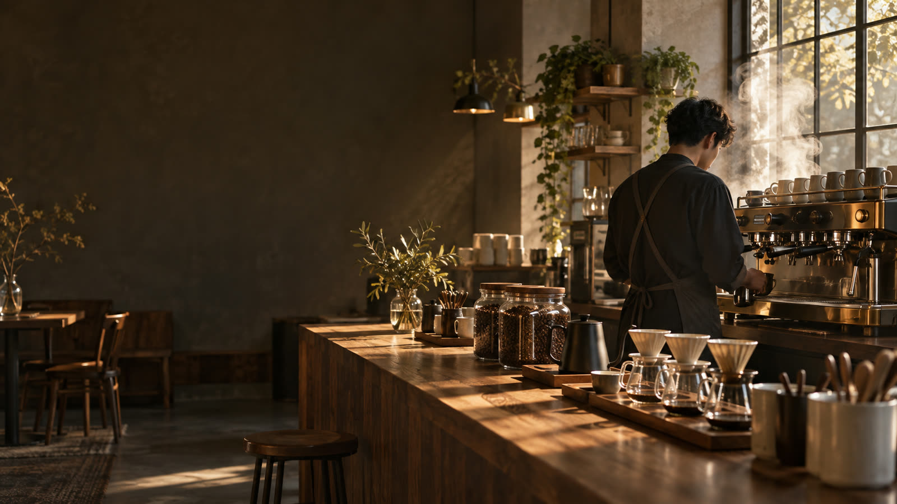
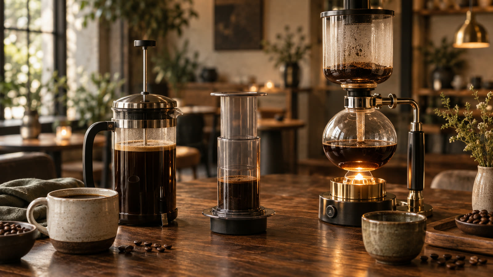
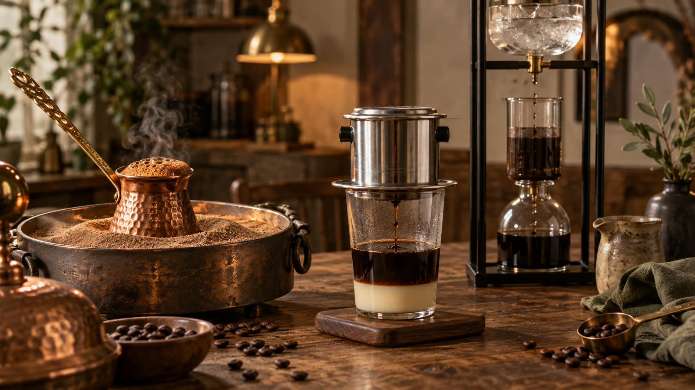
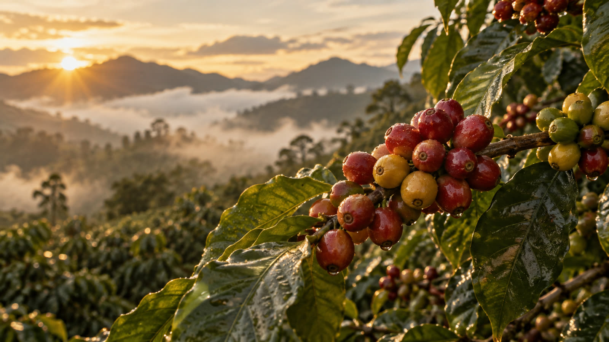
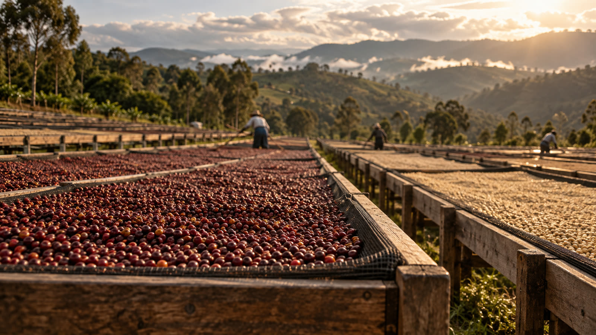
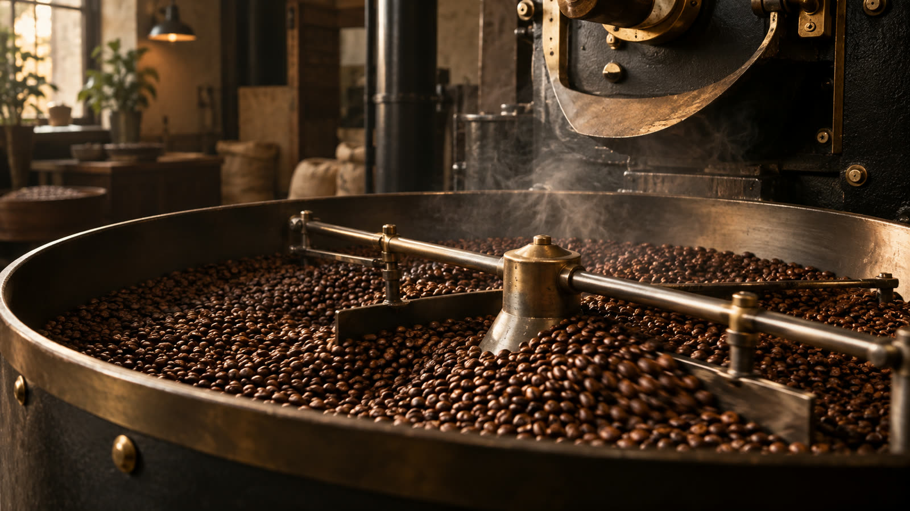
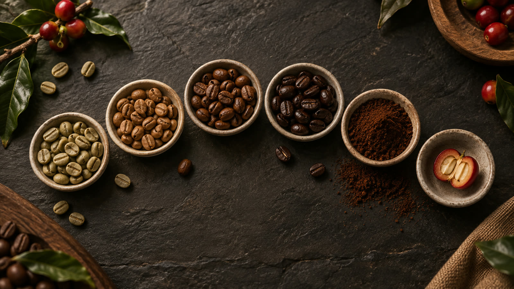

<title>咖啡沖煮模擬館</title>
<meta name="description" content="選豆子、處理法、烘焙度與沖煮法，模擬萃取過程並學習咖啡沖煮理論，收錄歷屆世界冠軍配方。">
<link rel="preconnect" href="https://fonts.googleapis.com">
<link rel="preconnect" href="https://fonts.gstatic.com" crossorigin>
<link rel="stylesheet" href="https://fonts.googleapis.com/css2?family=Bodoni+Moda:ital,opsz,wght@1,6..96,400;1,6..96,500&family=DM+Mono:wght@400;500&family=Noto+Sans+TC:wght@400;500;700&family=Noto+Serif+TC:wght@600;700;900&display=swap">
<link rel="stylesheet" href="css/style.css">

<header class="topbar">
  <div class="wrap">
    <a class="brand" href="#sim" data-goto="sim" aria-label="咖啡沖煮模擬館">
      <svg viewBox="0 0 32 32" aria-hidden="true" style="color:var(--crema)"><path d="M6 8h20l-7.5 13h-5z" fill="none" stroke="currentColor" stroke-width="1.8" stroke-linejoin="round"/><path d="M11 25h10" stroke="currentColor" stroke-width="1.8" stroke-linecap="round"/><path d="M16 21v4" stroke="currentColor" stroke-width="1.8"/><path d="M13 4q1.5 1.5 0 3M19 4q1.5 1.5 0 3" fill="none" stroke="currentColor" stroke-width="1.4" stroke-linecap="round"/></svg>
      <span><b>咖啡沖煮模擬館</b><i>Brew Lab</i></span>
    </a>
    <nav class="tabs" aria-label="主選單">
      <button class="tab" type="button" data-view="sim">沖煮吧台</button>
      <button class="tab" type="button" data-view="theory">萃取理論</button>
      <button class="tab" type="button" data-view="gear">器具圖鑑</button>
      <button class="tab" type="button" data-view="beans">豆子與處理法</button>
      <button class="tab" type="button" data-view="champions">冠軍配方</button>
    </nav>
    <button class="theme-btn" id="theme-btn" type="button" data-mode="system">◐ <span>自動</span></button>
  </div>
</header>

<section class="hero" aria-labelledby="hero-h">
  
  <div class="wrap">
    <div class="hero-text">
      <div class="eyebrow">Theory &amp; Simulation</div>
      <h1 id="hero-h">把一杯咖啡，<br>拆成<em>看得見的萃取</em></h1>
      <p class="lead">從產區、處理法、烘焙度到研磨、水溫與注水節奏，每個變因都會改變哪些分子進到杯子裡。先讀懂原理，再到吧台親手沖一次。</p>
      <div class="cta">
        <button class="btn" type="button" data-goto="sim">到吧台沖一杯</button>
        <button class="btn ghost" type="button" data-goto="theory">從理論開始</button>
      </div>
      <div class="menu-board" aria-label="收錄內容">
        <span><b id="stat-methods">16</b>種沖煮法</span>
        <span><b id="stat-beans">15</b>支產區豆</span>
        <span><b id="stat-proc">8</b>種處理法</span>
        <span><b id="stat-recipes">16</b>份冠軍與名人配方</span>
      </div>
    </div>
  </div>
</section>

<main id="main" class="wrap">

  <!-- ================= 沖煮吧台 ================= -->
  <section id="view-sim" class="view" aria-labelledby="sim-h">
    <div class="view-head">
      <div><div class="eyebrow">The Brew Bar</div><h2 id="sim-h">沖煮吧台</h2></div>
      <p>左邊調整豆子與參數，右邊會即時算出萃取率、濃度與風味。按「開始沖煮」可以看完整的萃取過程，調整建議能一鍵套用再沖一次。</p>
    </div>
    <div class="sim">
      <aside id="panel" aria-label="沖煮設定"></aside>
      <section id="stage" class="card" aria-label="沖煮檯">
        <div class="stage-head">
          <div><div class="eyebrow-sm">沖煮檯</div><h2 id="stage-title">Hario V60</h2><div id="stage-sub"></div></div>
          <div class="stage-actions">
            <button id="btn-play" class="btn" type="button">▶ 開始沖煮</button>
            <button id="btn-skip" class="btn ghost small" type="button">直接看結果</button>
            <label class="sr" for="speed">播放速度</label>
            <select id="speed"><option value="0.6">慢速播放</option><option value="1" selected>標準速度</option><option value="2">快速播放</option></select>
            <button id="btn-3d" class="btn ghost small" type="button" aria-pressed="true" hidden title="切換 3D 模型／平面插圖">3D</button>
          </div>
        </div>
        <div class="stage-body">
          <div class="stage-svg"><div id="stage-svg"></div><div id="stage-3d" hidden></div></div>
          <div class="lcd">
            <div class="lcd-cap"><span>REFRACTOMETER · BREW LOG</span><i>● REC</i></div>
            <dl class="lcd-row">
              <div><dt>時間</dt><dd id="ro-time">0:00</dd></div>
              <div><dt>粉層溫度</dt><dd><span id="ro-temp">0</span><small>°C</small></dd></div>
              <div><dt>已注水</dt><dd><span id="ro-pour">0</span><small>g</small></dd></div>
              <div><dt>杯中</dt><dd><span id="ro-cup">0</span><small>g</small></dd></div>
              <div class="sep"></div>
              <div class="big"><dt>TDS</dt><dd><span id="ro-tds">0</span><small>%</small></dd></div>
              <div class="big"><dt>EY</dt><dd><span id="ro-ey">0</span><small>%</small></dd></div>
            </dl>
          </div>
        </div>
        <div class="timeline" aria-hidden="true">
          <span id="tl-now">0:00</span>
          <div id="tl-track" title="點一下跳到該時間"><div id="tl-fill"></div><div id="tl-marks"></div></div>
          <span id="tl-end"></span>
        </div>
        <div class="live" id="live"></div>
        <div class="legend"><span><i class="lg-a"></i>酸與芳香</span><span><i class="lg-s"></i>糖與梅納產物</span><span><i class="lg-b"></i>苦味與重分子</span><span><i class="lg-c"></i>杯中 EY</span><span><i class="lg-p"></i>注水時間點</span><span>綠色帶：理想萃取率</span></div>
      </section>
      <section id="results" class="card" aria-label="沖煮結果" aria-live="polite"></section>
    </div>
  </section>

  <!-- ================= 萃取理論 ================= -->
  <section id="view-theory" class="view" aria-labelledby="theory-h" hidden>
    <div class="view-head">
      <div><div class="eyebrow">The Reading Room</div><h2 id="theory-h">萃取理論</h2></div>
      <p>十二個章節，從「萃取到底是什麼」一路談到濃縮咖啡的物理與這個模擬器的算法。每一章都可以回吧台實際驗證。</p>
    </div>
    <div class="theory">
      <nav class="toc" aria-label="章節">
        <a href="#ch1"><span>01</span>萃取是什麼</a>
        <a href="#ch2"><span>02</span>沖煮控制圖</a>
        <a href="#ch3"><span>03</span>研磨</a>
        <a href="#ch4"><span>04</span>水溫</a>
        <a href="#ch5"><span>05</span>粉水比與濃度</a>
        <a href="#ch6"><span>06</span>滲濾、浸泡與攪拌</a>
        <a href="#ch7"><span>07</span>水質</a>
        <a href="#ch8"><span>08</span>烘焙化學</a>
        <a href="#ch9"><span>09</span>產地與處理法</a>
        <a href="#ch10"><span>10</span>濃縮咖啡的物理</a>
        <a href="#ch11"><span>11</span>品嚐與調整</a>
        <a href="#ch12"><span>12</span>這個模擬器怎麼算</a>
      </nav>
      <div class="chapters">

        <article class="chapter" id="ch1">
          <h2><span class="no">01</span>萃取是什麼</h2>
          <p>咖啡豆大約有 28–30% 的重量可以溶進水裡，其餘是纖維素構成的細胞骨架。沖咖啡就是用水把這些可溶物「帶出來」，但我們並不想把它們全部帶出來：最後才溶出的那一批，多半是苦澀的。</p>
          <p>衡量一杯咖啡只需要兩個數字：</p>
          <div class="formula">
            <div>濃度 TDS ＝ 杯中溶解物 ÷ 飲品重量</div>
            <div>萃取率 EY ＝ 杯中溶解物 ÷ 咖啡粉重量 ＝ TDS × 飲品重量 ÷ 粉重</div>
            <div class="ex">例：15 g 粉沖出 225 g 咖啡，折射儀量到 TDS 1.30% → 225 × 1.30% ÷ 15 ＝ 19.5%</div>
          </div>
          <h3>萃取有先後順序</h3>
          <p>分子越小、越容易溶於水的成分越早出來。有機酸與揮發性芳香物最快；接著是糖類與梅納反應產物，帶來甜感、焦糖與醇厚；最慢的是大分子的苦味物質（例如綠原酸在烘焙中生成的內酯、深焙產生的苯基茚滿）與澀感物。</p>
          <figure class="figure"><div id="fig-order"></div><figcaption>模擬器中三類成分隨時間的溶出比例。酸在前 30 秒幾乎溶完，苦味分子到最後都還在慢慢爬升。</figcaption></figure>
          <p>所以「萃取不足」的咖啡只有酸、沒有甜，喝起來尖銳、偏鹹、尾韻短；「過度萃取」則讓苦與澀蓋過甜感，口腔發乾。理想狀態是酸已完整、甜已飽滿、苦味剛開始出現就停下來。</p>
        </article>

        <article class="chapter" id="ch2">
          <h2><span class="no">02</span>沖煮控制圖</h2>
          <p>1950 年代，麻省理工學院的 E. E. Lockhart 教授為美國咖啡沖煮研究所（Coffee Brewing Institute）做了大量消費者測試，把「濃度」與「萃取率」畫在同一張圖上，這就是沿用至今的沖煮控制圖。</p>
          <ul>
            <li><b>橫軸 EY</b> 決定「萃取出什麼」：左邊偏酸、右邊偏苦。</li>
            <li><b>縱軸 TDS</b> 決定「多濃」：上面濃、下面淡。</li>
            <li><b>斜線是粉水比</b>：同一個粉水比下，萃取越多就越濃，你只能沿著那條斜線移動。想跳到別條線，就得改粉量或水量。</li>
          </ul>
          <p>美國精品咖啡協會（SCA）的金杯標準是 EY 18–22%、TDS 1.15–1.35%；歐洲的標準略濃（1.20–1.45%），北歐更濃（1.30–1.55%）。近年加州大學戴維斯分校的研究也發現，消費者偏好會分成不同族群，「理想區間」並不是唯一答案。</p>
          <figure class="figure demo">
            <div class="demo-ctl">
              <div class="field"><div class="field-top"><label for="demo-ratio">粉水比</label><span class="field-val" id="demo-ratio-v"></span></div><input type="range" id="demo-ratio" min="11" max="20" step="0.5" value="16"></div>
              <div class="field"><div class="field-top"><label for="demo-ey">萃取率 EY</label><span class="field-val" id="demo-ey-v"></span></div><input type="range" id="demo-ey" min="13" max="26" step="0.1" value="20"></div>
            </div>
            <div class="demo-out" id="demo-out"></div>
            <div id="fig-ctl"></div>
            <figcaption>拖動兩個滑桿：點只會沿著你選的粉水比斜線移動。這張圖假設濾紙每克粉吸走約 2 g 水。</figcaption>
          </figure>
        </article>

        <article class="chapter" id="ch3">
          <h2><span class="no">03</span>研磨</h2>
          <p>研磨是最有力、也最常被誤解的變因。它同時改變兩件事：</p>
          <ol>
            <li><b>萃取速度</b>：顆粒直徑減半，同重量的總表面積約加倍；水要擴散進顆粒中心的路徑也減半，擴散時間大約變成四分之一（與直徑平方成正比）。</li>
            <li><b>流速</b>：在滲濾式沖煮裡，粉層像一塊多孔的海綿。依照達西定律與 Kozeny–Carman 關係，水流過的速度大約和顆粒直徑的平方成正比。磨細一點，水會流得更慢，接觸時間也跟著拉長。</li>
          </ol>
          <p>這就是為什麼手沖只改研磨，會同時改變萃取速度和總時間兩件事，效果比想像中大。</p>
          <figure class="figure"><div id="fig-grind"></div><figcaption>各沖煮法常見的研磨範圍。顏色代表類別：金＝手沖、綠＝混合式、藍＝浸泡、紅＝加壓、橘＝傳統與冷萃。不同磨豆機的刻度無法直接互換，微米數才是共同語言。</figcaption></figure>
          <h3>沒有磨豆機能磨出單一尺寸</h3>
          <p>實際的粉是一個分佈：主要顆粒之外，還有一群小於 100 µm 的細粉，以及少數過大的粗粒。細粉溶得極快、容易帶出苦澀，還會堵住濾紙讓下水變慢；粗粒則萃取不足。平刀分佈較集中、乾淨度高；錐刀分佈較寬，細粉多一點、口感較厚；刀片式磨豆機其實是「打碎」，粗細差距最大。</p>
          <figure class="figure"><div id="fig-dist"></div><figcaption>三種磨豆機的粒徑分佈示意（相同中位數）。刀片式同時有很多細粉和大顆粒，杯中會同時出現酸與苦。</figcaption></figure>
          <div class="note-box"><b>小技巧</b>　研磨前在豆子上噴一滴水（RDT）可以減少靜電與粉末亂飛；比賽選手也會用篩網篩掉細粉，或像 2019 冠軍杜佳寧一樣先粗磨去除銀皮再細磨。</div>
        </article>

        <article class="chapter" id="ch4">
          <h2><span class="no">04</span>水溫</h2>
          <p>溫度越高，分子運動越快，溶解與擴散都加速。化學上用阿瑞尼斯方程式描述：<span style="font-family:var(--font-mono)">k = A · e<sup>−Ea/RT</sup></span>。活化能 Ea 越大的反應，對溫度越敏感。</p>
          <p>苦味的大分子活化能高，所以<b>降溫時苦味下降得比酸快</b>；反過來，淺焙豆想萃出甜感就需要高溫。這也是為什麼很多冠軍會在同一杯裡使用兩種水溫。</p>
          <figure class="figure"><div id="fig-temp"></div><figcaption>模擬器使用的相對萃取速度（93°C 為 1）。從 93°C 降到 80°C，酸質速度只少三成，苦味分子卻掉了一半以上。</figcaption></figure>
          <table class="data-table">
            <thead><tr><th>烘焙度</th><th>建議水溫</th><th>原因</th></tr></thead>
            <tbody>
              <tr><td>極淺～淺焙</td><td class="n">93–97°C</td><td>密度高、細胞結構完整，不易萃取</td></tr>
              <tr><td>中淺～中焙</td><td class="n">90–95°C</td><td>酸甜平衡的甜蜜點</td></tr>
              <tr><td>中深～深焙</td><td class="n">83–92°C</td><td>結構脆、可溶物多，高溫容易焦苦</td></tr>
            </tbody>
          </table>
          <p>另外要記得：粉層的實際溫度會比壺裡的水低 5–8°C，因為咖啡粉、濾杯與蒸發都會吸熱。預熱濾杯和分享壺能減少這個落差。</p>
          <div class="note-box"><b>冠軍怎麼用溫度</b>　2018 深堀絵美：80°C 浸泡 → 95°C 滴濾 → 80°C 浸泡。2022 徐詩媛：第一段 75°C，之後 95°C。2025 George Peng：96°C 萃出甜與重量，最後一段降到 80°C 只補酸質與香氣。</div>
        </article>

        <article class="chapter" id="ch5">
          <h2><span class="no">05</span>粉水比與濃度</h2>
          <p>萃取率決定「萃出了什麼」，粉水比決定「濃淡」。兩者是獨立的：一杯咖啡可以萃取得剛好卻太淡，也可以萃取不足卻很濃。</p>
          <table class="data-table">
            <thead><tr><th>沖煮法</th><th>常見粉水比</th><th>典型 TDS</th></tr></thead>
            <tbody>
              <tr><td>手沖、聰明濾杯、虹吸</td><td class="n">1:15–1:17</td><td class="n">1.2–1.45%</td></tr>
              <tr><td>法式濾壓壺</td><td class="n">1:12–1:16</td><td class="n">1.2–1.5%</td></tr>
              <tr><td>冷萃濃縮液</td><td class="n">1:8–1:10</td><td class="n">1.5–2.5%</td></tr>
              <tr><td>摩卡壺</td><td class="n">1:7–1:10</td><td class="n">2–4%</td></tr>
              <tr><td>土耳其咖啡</td><td class="n">1:9–1:12</td><td class="n">2–3.5%</td></tr>
              <tr><td>越南滴滴壺</td><td class="n">1:4–1:6</td><td class="n">4–7%</td></tr>
              <tr><td>義式濃縮（出杯重）</td><td class="n">1:1.5–1:3</td><td class="n">7.5–12%</td></tr>
            </tbody>
          </table>
          <h3>水不會全部進到杯子</h3>
          <p>濾紙沖煮時，每克咖啡粉大約會留住 2 g 的水。所以 15 g 粉加 250 g 水，只會得到約 220 g 咖啡；留在粉層裡的那些液體也帶走了一部分溶解物。</p>
          <h3>旁流（bypass）</h3>
          <p>錐形濾杯中，部分熱水會沿著濾紙與杯壁的縫隙直接流下，沒有經過粉層。旁流會稀釋咖啡、讓濃度下降，但不會增加萃取。Chemex 的厚濾紙、平底濾杯與 2025 冠軍用的「無旁流」濾杯，都是在減少這件事。</p>
        </article>

        <article class="chapter" id="ch6">
          <h2><span class="no">06</span>滲濾、浸泡與攪拌</h2>
          <figure class="figure">
            <div class="perc-fig">
              <figure>
                <svg viewBox="0 0 220 220" role="img" aria-label="滲濾示意：上層淡、下層濃">
                  <defs><marker id="arrowhead" viewBox="0 0 10 10" refX="8" refY="5" markerWidth="6" markerHeight="6" orient="auto"><path class="pf-arrow-head" d="M0 0 L10 5 L0 10 z"/></marker></defs>
                  <polygon class="s-solid" points="30,30 190,30 125,190 95,190"/>
                  <polygon class="pf-layer1" points="46,60 174,60 157,100 63,100"/>
                  <polygon class="pf-layer2" points="63,100 157,100 141,140 79,140"/>
                  <polygon class="pf-layer3" points="79,140 141,140 125,180 95,180"/>
                  <path class="pf-arrow" d="M110 10 L110 50"/><path class="pf-arrow" d="M110 184 L110 214"/>
                  <text class="c-tick" x="182" y="84">淡</text><text class="c-tick" x="152" y="168">濃</text>
                </svg>
                <figcaption>滲濾：新鮮的水一直從上面進來</figcaption>
              </figure>
              <figure>
                <svg viewBox="0 0 220 220" role="img" aria-label="浸泡示意：整體濃度均勻上升">
                  <rect class="s-glass" x="45" y="30" width="130" height="170" rx="10"/>
                  <rect class="pf-uni" x="48" y="60" width="124" height="137" rx="8"/>
                  <path class="pf-arrow" d="M80 170 C60 120 90 90 110 110"/><path class="pf-arrow" d="M150 90 C170 140 130 160 115 140"/>
                  <text class="c-tick" x="110" y="52" text-anchor="middle">整體一起變濃</text>
                </svg>
                <figcaption>浸泡：粉和水一起泡，驅動力逐漸變小</figcaption>
              </figure>
            </div>
          </figure>
          <p><b>浸泡</b>（法壓、愛樂壓、虹吸、冷萃）：液體濃度越來越高，顆粒內外的濃度差越來越小，萃取自然趨緩。好處是容錯率高、容易重現。</p>
          <p><b>滲濾</b>（手沖、濃縮、滴滴壺）：乾淨的水不斷流過粉層，上層的濃度差一直保持很大，效率比較高，但也更依賴注水技巧，任何不均勻都會被放大。</p>
          <h3>攪拌打破「邊界層」</h3>
          <p>每顆咖啡粉表面都包著一層濃度很高的液體，會拖慢後面的溶出。攪拌、繞圈注水、搖晃濾杯都是在把這層液體帶走。注水本身就是一種攪拌：繞圈比中心定點強，Rao spin（最後搖晃濾杯）能讓粉床平整；反過來，Melodrip 分水網把水流打散成雨，幾乎不擾動粉層。</p>
          <h3>悶蒸</h3>
          <p>烘焙會在豆子裡產生大量二氧化碳。熱水一接觸粉，CO₂ 就往外衝，把水推開，造成萃取不均。先用粉重 2–3 倍的水把粉打濕、等 30–45 秒讓氣體排出，就是悶蒸。豆子越新鮮、烘得越深，悶蒸越重要。</p>
        </article>

        <article class="chapter" id="ch7">
          <h2><span class="no">07</span>水質</h2>
          <p>一杯手沖咖啡有 98% 以上是水。水中的礦物質會直接參與萃取：</p>
          <ul>
            <li><b>鎂、鈣（硬度）</b>：帶正電的離子會和咖啡中的風味分子結合，幫忙把它們「抓」出來。鎂對部分果酸與芳香物的結合力較強。</li>
            <li><b>碳酸氫根（鹼度）</b>：緩衝劑，會中和咖啡的酸。太多讓咖啡喝起來悶、鈍；太少則酸得尖銳。</li>
            <li><b>完全沒有礦物質的純水</b>：萃取效率差，風味扁平空洞。</li>
          </ul>
          <table class="data-table">
            <thead><tr><th>SCA 沖煮用水標準</th><th>目標</th><th>可接受範圍</th></tr></thead>
            <tbody>
              <tr><td>總溶解固體 TDS</td><td class="n">150 mg/L</td><td class="n">75–250 mg/L</td></tr>
              <tr><td>鈣硬度（以 CaCO₃ 計）</td><td class="n">68 mg/L</td><td class="n">17–85 mg/L</td></tr>
              <tr><td>總鹼度</td><td class="n">40 mg/L</td><td class="n">接近 40 mg/L</td></tr>
              <tr><td>pH</td><td class="n">7.0</td><td class="n">6.5–7.5</td></tr>
              <tr><td>鈉</td><td class="n">10 mg/L</td><td class="n">接近 10 mg/L</td></tr>
              <tr><td>總氯</td><td class="n">0 mg/L</td><td class="n">—</td></tr>
            </tbody>
          </table>
          <p>2015 年咖啡師 Maxwell Colonna-Dashwood 與化學家 Christopher Hendon 合著的《Water for Coffee》把這些化學講清楚後，比賽選手開始自己調水：2019 杜佳寧自調鈣鎂比例、2023 Carlos Medina 使用 TDS 約 65 ppm、鈣鎂各半的水、2025 George Peng 使用 40 ppm 的水。</p>
          <div class="note-box"><b>在臺灣</b>　各地自來水硬度差異大，一般而言北部較軟、中南部較硬。家裡沖煮可以先從過濾水或市售軟水開始，覺得咖啡「悶」就降低鹼度，覺得「扁」就增加礦物質。</div>
        </article>

        <article class="chapter" id="ch8">
          <h2><span class="no">08</span>烘焙化學</h2>
          <p>生豆幾乎沒有咖啡味。咖啡的風味是在烘焙的十來分鐘內，由上百種化學反應生出來的。</p>
          <figure class="figure"><div id="fig-roast"></div><figcaption>典型淺中焙的豆溫曲線（示意）。一爆後到出爐的「發展期」常佔總時間的 15–25%。</figcaption></figure>
          <ol>
            <li><b>脫水期</b>：生豆含水約 10–12%，先把水分蒸發掉，豆子由綠轉黃，聞起來像穀物、麵包。</li>
            <li><b>梅納反應</b>（約 150°C 起）：胺基酸與還原糖反應，產生褐色的類黑素與大量香氣分子：堅果、烤麵包、焦糖、巧克力都從這裡來。</li>
            <li><b>焦糖化</b>（約 170°C 起）：蔗糖分解，帶來焦糖香，也讓甜味減少、苦味增加。</li>
            <li><b>一爆</b>（約 196°C）：豆內的水蒸氣與 CO₂ 壓力讓細胞壁爆裂，發出像爆米花的聲音。淺焙多在一爆中後段出爐。</li>
            <li><b>二爆</b>（約 224°C）：細胞結構進一步崩解，油脂浮到表面，煙燻與苦味開始主導。</li>
          </ol>
          <p>烘焙也改變了「萃取的難易度」。越深焙的豆子結構越脆、孔隙越多、可溶物越多，萃取得越快；淺焙豆需要更高的水溫或更細的研磨。綠原酸在烘焙中逐漸分解成帶澀的奎寧酸與帶苦的綠原酸內酯，深焙更會生成強烈苦味的苯基茚滿。</p>
          <h3>烘焙後要等幾天？</h3>
          <p>剛烘好的豆子仍在釋放 CO₂，直接沖容易不均、帶刺激感。一般手沖用豆建議休息 5–14 天，濃縮用豆 7–21 天；超過四到五週，揮發性香氣會明顯流失。模擬器裡的「烘焙後天數」就是在模擬這件事。</p>
        </article>

        <article class="chapter" id="ch9">
          <h2><span class="no">09</span>產地與處理法</h2>
          <p>萃取只能把豆子裡「已經有的東西」帶出來。風味的上限在產地就決定了：</p>
          <ul>
            <li><b>海拔</b>：高海拔日夜溫差大，果實熟得慢，種子密度高、糖與酸更多，風味更複雜。</li>
            <li><b>品種</b>：藝伎的花香、肯亞 SL28 的黑醋栗、波旁的甜感，都是遺傳帶來的。</li>
            <li><b>處理法</b>：採收後如何去除果肉、如何乾燥，會大幅改變風味。水洗讓產地特色最清楚；日曬帶來果醬與酒香；厭氧、二氧化碳浸漬、熱衝擊等新處理法則用發酵創造新的香氣。</li>
          </ul>
          <p>處理法的發酵主角是酵母與乳酸菌：它們吃掉果膠裡的糖，產生有機酸、酯類與醇類。控制溫度、時間與氧氣，就等於在控制最後的香氣輪廓。2015 年 Sasa Sestic 把葡萄酒的二氧化碳浸漬法帶進咖啡並奪下世界咖啡師冠軍後，處理法成了比賽的重要武器。</p>
          <p><button class="btn ghost small" type="button" data-goto="beans">看 15 支產區豆與 8 種處理法 →</button></p>
        </article>

        <article class="chapter" id="ch10">
          <h2><span class="no">10</span>濃縮咖啡的物理</h2>
          <p>義式濃縮用約 9 bar（九倍大氣壓）把 90–95°C 的熱水推過一塊被壓實的細粉餅，25–35 秒內得到濃度 8–12% 的液體。它和手沖是同一套萃取化學，但流體力學完全不同。</p>
          <h3>流速由粉餅決定</h3>
          <p>粉餅是多孔介質，流量約等於「壓力 ÷ 阻力」。研磨越細、粉量越多，阻力越大，水流得越慢。所以咖啡師的標準流程是：<b>先決定粉量與出杯重（比例），再用研磨去調時間</b>。</p>
          <table class="data-table">
            <thead><tr><th>名稱</th><th>比例（粉：出杯）</th><th>特色</th></tr></thead>
            <tbody>
              <tr><td>Ristretto</td><td class="n">1:1–1:1.5</td><td>最濃、厚重，萃取率較低</td></tr>
              <tr><td>Normale</td><td class="n">1:2</td><td>最常見的平衡點</td></tr>
              <tr><td>Lungo</td><td class="n">1:3 以上</td><td>較淡、萃取率高，容易帶苦</td></tr>
              <tr><td>Turbo shot</td><td class="n">約 1:3，6 bar，約 15 秒</td><td>較粗研磨、低壓、快速，萃取反而穩定</td></tr>
            </tbody>
          </table>
          <h3>通道效應</h3>
          <figure class="figure">
            <div class="perc-fig">
              <figure>
                <svg viewBox="0 0 220 170" role="img" aria-label="均勻粉餅：水流平均通過">
                  <defs><marker id="arrowhead2" viewBox="0 0 10 10" refX="8" refY="5" markerWidth="6" markerHeight="6" orient="auto"><path class="pf-arrow-head" d="M0 0 L10 5 L0 10 z"/></marker></defs>
                  <rect class="s-ground" x="30" y="60" width="160" height="50" rx="4"/>
                  <g style="marker-end:url(#arrowhead2)"><path class="pf-arrow" style="marker-end:url(#arrowhead2)" d="M55 20 L55 150"/><path class="pf-arrow" style="marker-end:url(#arrowhead2)" d="M90 20 L90 150"/><path class="pf-arrow" style="marker-end:url(#arrowhead2)" d="M130 20 L130 150"/><path class="pf-arrow" style="marker-end:url(#arrowhead2)" d="M165 20 L165 150"/></g>
                </svg>
                <figcaption>均勻的粉餅：每個位置的水流一樣</figcaption>
              </figure>
              <figure>
                <svg viewBox="0 0 220 170" role="img" aria-label="通道效應：水集中從裂縫衝過">
                  <rect class="s-ground" x="30" y="60" width="160" height="50" rx="4"/>
                  <path class="pf-crack" d="M118 60 L126 76 L114 92 L122 110 L130 110 L122 92 L134 76 L126 60 Z"/>
                  <path class="pf-strong" d="M124 20 L124 150"/>
                  <path class="pf-arrow" style="marker-end:url(#arrowhead2);opacity:.45" d="M55 20 L55 150"/><path class="pf-arrow" style="marker-end:url(#arrowhead2);opacity:.45" d="M85 20 L85 150"/><path class="pf-arrow" style="marker-end:url(#arrowhead2);opacity:.45" d="M165 20 L165 150"/>
                </svg>
                <figcaption>通道：水從裂縫衝過，周圍反而流得慢</figcaption>
              </figure>
            </div>
          </figure>
          <p>水永遠走阻力最小的路。布粉不均、填壓歪斜、研磨太細，都會讓粉餅出現裂縫。裂縫裡的粉被大量的水沖到過度萃取，其他地方的粉卻幾乎沒碰到水。結果是同一杯裡又酸又苦，而且量到的萃取率反而偏低。</p>
          <p>對策：用細針把結塊打散的 WDT 布粉法、水平填壓、低壓預浸讓粉餅先均勻吸水膨脹。2020 年 Cameron 等人發表在《Matter》期刊的研究更用數學模型指出：粉量少一點、研磨粗一點，萃取反而更穩定，這也是 turbo shot 流行的原因。</p>
          <h3>Crema 是什麼</h3>
          <p>高壓讓 CO₂ 溶進液體，出杯後壓力釋放形成細小氣泡，再被蛋白質、類黑素與油脂穩定下來。Crema 是新鮮度的指標，但不等於好喝；羅布斯塔的 crema 特別厚。</p>
        </article>

        <article class="chapter" id="ch11">
          <h2><span class="no">11</span>品嚐與調整</h2>
          <p>喝一口，先分兩個問題：<b>酸還是苦？</b>（萃取的問題）<b>淡還是濃？</b>（粉水比的問題）。一次只改一個變因。</p>
          <div class="dial" role="table" aria-label="調整羅盤">
            <span></span><span class="h">酸、尖、鹹（萃取不足）</span><span class="h">酸甜平衡</span><span class="h">苦、澀、乾（過度萃取）</span>
            <span class="v">濃</span><div class="c"><b>濃而酸</b>磨細一點或升溫，並加一點水</div><div class="c"><b>濃郁</b>萃取剛好，多加 5–10% 的水</div><div class="c"><b>濃而苦</b>磨粗或降溫，並加水</div>
            <span class="v">剛好</span><div class="c"><b>偏酸</b>磨細、升溫或延長時間</div><div class="c mid"><b>理想</b>記下參數，開始微調個性</div><div class="c"><b>偏苦</b>磨粗、降溫或減少攪拌</div>
            <span class="v">淡</span><div class="c"><b>淡而酸</b>先磨細，再考慮增加粉量</div><div class="c"><b>清淡</b>萃取剛好，增加粉量</div><div class="c"><b>淡而苦</b>通常是通道或細粉太多：換磨豆機、改善注水</div>
          </div>
          <h3>酸不只一種</h3>
          <ul>
            <li><b>檸檬酸</b>：柑橘、檸檬，常見於高海拔水洗豆。</li>
            <li><b>蘋果酸</b>：青蘋果、梨子般的清脆。</li>
            <li><b>磷酸</b>：肯亞豆特有的「鮮明、帶礦物感」的酸，常被形容成黑醋栗。</li>
            <li><b>醋酸</b>：發酵產生，少量是酒香，多了就是醋味。</li>
            <li><b>奎寧酸</b>：綠原酸分解而來，帶澀與苦，放涼或放久會更明顯。</li>
          </ul>
          <p>SCA 與 World Coffee Research 在 2016 年更新的《咖啡品鑑者風味輪》，把咖啡風味整理成花香、水果、酸／發酵、綠色／蔬菜、烘焙、辛香料、堅果／可可、甜等大類，是描述風味時最通用的語言。</p>
        </article>

        <article class="chapter" id="ch12">
          <h2><span class="no">12</span>這個模擬器怎麼算</h2>
          <p>吧台背後是一個簡化的物理模型，每個時間步（手沖 0.25 秒、濃縮 0.05 秒、冷萃 20 秒）依序計算：</p>
          <ol>
            <li><b>三池動力學</b>：把可溶物分成酸與芳香（快）、糖與梅納產物（中）、苦味重分子（慢）三群，各自以一階速率溶出，總量依烘焙度 26–32%。</li>
            <li><b>溫度</b>：阿瑞尼斯方程式，三群的活化能分別為 15、28、45 kJ/mol；低溫時部分成分溶不出來（冷萃的甜與低苦）。</li>
            <li><b>研磨與細粉</b>：速率隨顆粒大小的冪次變化；磨豆機種類決定細粉比例，細粉會放大苦味並拖慢下水。</li>
            <li><b>分層滲流</b>：粉層切成數層串聯，上層接觸新鮮的水、下層濃度高；流速由重力、濾紙阻力與研磨決定，濃縮則由泵壓與粉餅阻力決定。</li>
            <li><b>其他</b>：注水與攪拌的擾動、濃度差造成的驅動力、CO₂ 悶蒸、熱量散失、旁流、閥門、通道效應。</li>
          </ol>
          <p>風味分數則從豆子的產地潛力出發，依萃取與濃度落點、細粉、通道、新鮮度、水質扣分。</p>
          <div class="note-box"><b>限制</b>　係數是用公開的經典配方校準的，絕對數字僅供參考，重點是趨勢：磨細會怎樣、降溫會怎樣、多一段注水會怎樣。冠軍配方多半使用極高品質的豆子與特製烘焙，模擬器也無法完全反映；例如極粗研磨加低溫首注的配方，模擬出來的萃取率會比實際低；turbo shot 在模擬中的流速也比實際慢（約 35 秒，而不是 15 秒）。</div>
        </article>
      </div>
    </div>
  </section>

  <!-- ================= 器具圖鑑 ================= -->
  <section id="view-gear" class="view" aria-labelledby="gear-h" hidden>
    <div class="banner"><div><div class="eyebrow">Brewing Methods</div><h2 id="gear-h">器具圖鑑</h2><p>十六種主流沖煮法的原理、參數與常見錯誤。每一種都可以直接帶到吧台沖。</p></div></div>
    <div class="filter-row" id="gear-filter"></div>
    <div class="grid-cards" id="gear-grid"></div>
    <div class="banner sec"><div><h2>咖啡不只有一種喝法</h2><p>土耳其咖啡在 2013 年被列入聯合國教科文組織的非物質文化遺產；越南的滴滴壺配煉乳、京都的冰滴塔，都是在地條件長出來的沖煮法。</p></div></div>
  </section>

  <!-- ================= 豆子與處理法 ================= -->
  <section id="view-beans" class="view" aria-labelledby="beans-h" hidden>
    <div class="banner"><div><div class="eyebrow">Origins</div><h2 id="beans-h">產區豆</h2><p>風味的上限在產地就決定了。長條圖是這支豆在理想萃取下的基本輪廓（0–10）。</p></div></div>
    <div class="grid-cards" id="bean-grid"></div>
    <div class="banner sec"><div><div class="eyebrow">Processing</div><h2>處理法</h2><p>採收後怎麼處理果肉與乾燥，會改變酸、甜、醇厚與發酵感。數字是模擬器中對風味的加減分。</p></div></div>
    <div class="grid-cards" id="process-grid"></div>
    <div class="banner sec"><div><div class="eyebrow">Roast Levels</div><h2>烘焙度</h2><p>以 SCA 烘焙色卡（Agtron #95 到 #25）對照。越深焙越容易萃取，建議水溫也越低。</p></div></div>
    <div class="roast-strip" id="roast-strip"></div>
    <figure class="figure sec"><figcaption>從生豆到深焙：顏色、體積與油脂的變化。</figcaption></figure>
  </section>

  <!-- ================= 冠軍配方 ================= -->
  <section id="view-champions" class="view" aria-labelledby="champ-h" hidden>
    <div class="banner"><div><div class="eyebrow">Champions</div><h2 id="champ-h">冠軍配方</h2><p>世界沖煮大賽（WBrC）、世界咖啡師大賽（WBC）與世界愛樂壓大賽（WAC）的公開配方，以及業界基準。每一份都能載入吧台模擬。</p></div></div>
    <div class="essay">
      <div><h3>把變因拆開</h3><p>粕谷哲的 4:6 法把「酸甜」和「濃淡」交給兩組不同的注水處理，讓一個複雜問題變成兩個簡單問題。</p></div>
      <div><h3>溫度是調味料</h3><p>深堀絵美的 80/95/80°C、徐詩媛的 75/95°C、George Peng 的 96/80°C：用高溫取甜，用低溫保留香氣與乾淨度。</p></div>
      <div><h3>研磨不只一種</h3><p>徐詩媛把粗、細兩種研磨分工，杜佳寧先粗磨去銀皮再細磨。粒徑分佈本身也是配方的一部分。</p></div>
      <div><h3>水也是配方</h3><p>自調鈣鎂比例、低 TDS 的水越來越常見，因為水的礦物質直接決定能抓出哪些風味。</p></div>
      <div><h3>減少擾動</h3><p>王策只對中心注水、Matt Winton 堅持不攪拌、George Peng 用分水網：讓粉層保持完整，換取乾淨的一杯。</p></div>
      <div><h3>豆子決定上限</h3><p>Sasa Sestic 用二氧化碳浸漬處理法贏得 2015 WBC。沖煮大賽決賽裡，藝伎與實驗性處理法佔了大多數。</p></div>
    </div>
    <div class="grid-cards" id="recipe-grid"></div>
    <div class="hof sec">
      <div><h3>世界沖煮大賽（WBrC）歷屆冠軍</h3><ol id="wbrc-list"></ol><p class="hint">2020 年因疫情停辦。</p></div>
      <div><h3>世界咖啡師大賽（WBC）部分冠軍</h3><ol id="wbc-list"></ol></div>
    </div>
  </section>
</main>

<footer>
  <div class="wrap">
    <p>模擬結果來自簡化的萃取模型，係數以公開配方校準，適合用來理解趨勢，不能取代實際的折射儀量測。</p>
    <p>冠軍配方整理自 Sprudge、European Coffee Trip、Barista Magazine、Slow Pour Supply、World Coffee Championships、World AeroPress Championship 與選手公開資料；未公開的數值已標示為推估。</p>
    <p>照片由 ChatGPT 生成，僅作氛圍示意，畫面中的人物與場景皆非真實。</p>
  </div>
</footer>

<script src="js/data.js"></script>
<script src="js/engine.js"></script>
<script src="js/brew.js"></script>
<script src="js/draw.js"></script>
<script src="js/charts.js"></script>
<script src="js/ui.js"></script>
<script type="importmap">{ "imports": { "three": "https://cdn.jsdelivr.net/npm/three@0.170.0/build/three.module.min.js", "three/addons/": "https://cdn.jsdelivr.net/npm/three@0.170.0/examples/jsm/" } }</script>
<script src="js/models.js"></script>
<script type="module" src="js/stage3d.js"></script>
